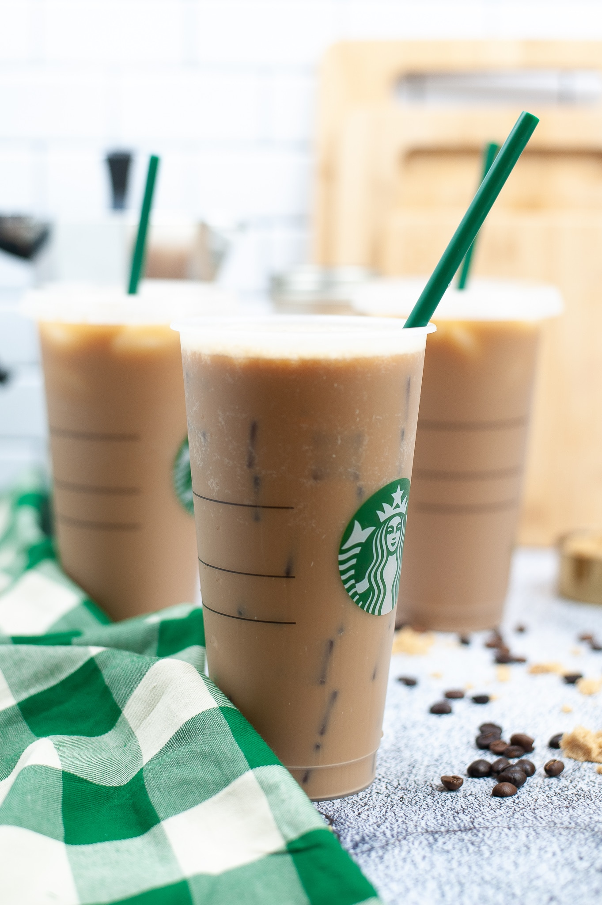

Ice Coffee
Funny to admit – I’m finally starting to feel like an adult, because I’ve figured out how to make a good cup of coffee at home. I’m going to share how to make a Starbucks iced coffee copycat recipe via two methods: cold pressed iced coffee and French press iced coffee.
Ingredients
- 3 tablespoons warm water
- 2 teaspoons instant coffee granules
- 1 teaspoon sugar
- 1 cup ice, or as needed
- 6 fluid ounces cold milk
Steps
- Gather all ingredients.
- Combine warm water, instant coffee, and sugar in a sealable jar. Seal and shake until foamy.
- Pour into a glass full of ice; add milk. Adjust to taste if necessary.
- Enjoy
Home